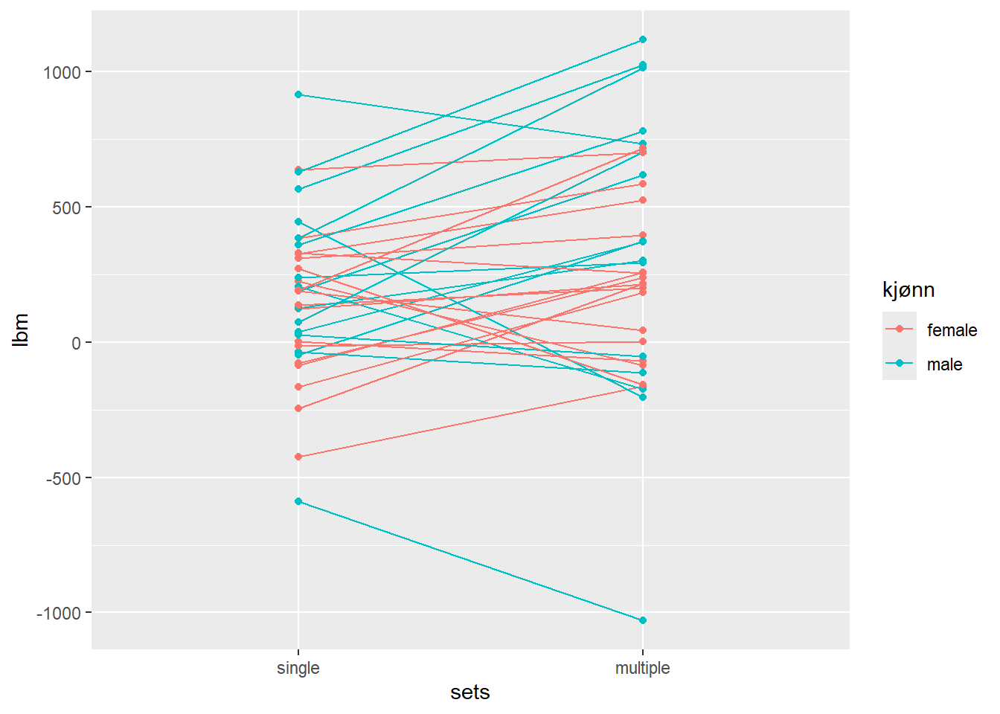
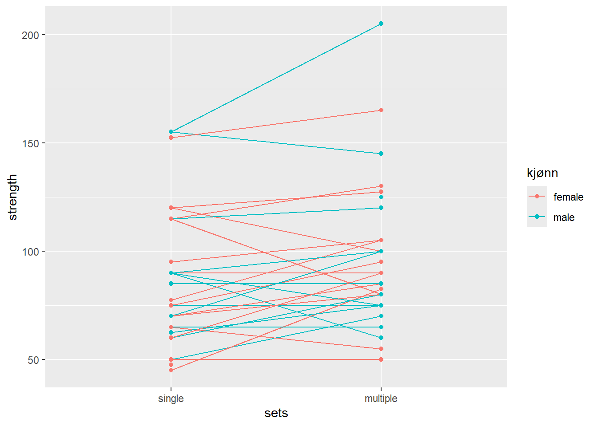

| Age (years) | Stature (cm) | Body mass (kg) | |
|---|---|---|---|
| Female n = 18 | 22 (1.3) | 167.7 (6.9) | 64.4 (10.4) |
| Male n = 16 | 23.6 (4.1) | 182.9 (5.9) | 75.8 (10.7) |
5 Analyse av gjentatte målte eksperiment
5.1 Effekten av treningsvolum på hypertrofi og styrke
5.1.1 Introduksjon
Menneskekroppen er relativt god til å tilpasse seg miljøet den lever i eller blir utsatt for. Ved økt treningsbelastning vil kroppen vår, særlig muskelen våre over tid tilpasse seg den økte belastningen ved å øke styrke og volum. Hvordan vi kan gjøre dette på mest mulig effektiv måte er ofte målet innenfor treningsfysiologisk forskning. Det er mange faktorer som spiller inn på hvordan og hvor raskt musklene våre tilpasser. Treningsvolum, antall sett, antall repetisjoner og pause mellom sett vil påvirke effekten av treningen. Det som vanligvis anbefales for hypertrofi er for eksempel moderat til høy motstand, høyt volum og korte pauser mellom sett. For å øke styrke er det vanlig å øke motstand, redusere volum og ha lengre pauser (Anon, 2009) (Schoenfeld et al., 2016). Dette har trolig sammenheng med at trening med få repetisjoner til utmattelse kan bidra til bedre muskelaktivering (Ruple et al., 2023).
Når det gjelder treningsvolum kan det se ut som at dette har en større betydning for hypertrofi enn for styrke. Ved trening av maksimal styrke vil man få stor effekt av relativt lavt treningsvolum. Økt treningsvolum vil føre til enda større økning i styrke, men ikke proposjonalt i forhold til treningsvolum. For hypertrofi er det derimot en mer proposjonal utvikling i forhold til treningsvolum (SCHOENFELD et al., 2019). Forkning gjort på godt trente idrettsutøvere tyder også på at større treningsvolum i styrketrening gir større økning i styrke, selv om dette ikke alltid er det lureste for konkurrende uttøvere på grunn av totalbelastningen (Naclerio et al., 2013).
Som sagt gir også lavere treningsvolum gode resultater, og selv om det antagligvis er størst effekt med høyt treningsvolum er det i noen tilfeller er det vanskelig å bestemme hva som gir best resultat av høyt og lavt treningsvolum (Mitchell et al., 2012). En metastudie fra 2019 foreslår at en enkelt set med 6-12 repetisjoner med motstand fra 70-85 % 1RM, 2-3 ganger per uke med høy intensitet (til utmattelse) kan over en periode på 8-12 uker gi en signifikant økning av maksimal styrke hos trente personer (Androulakis-Korakakis et al., 2019).
Målet med denne studien er å se hvordan forskjellig treningsvolum påvirker muskelhypertrofi og muskelstyrke hos relativt lite trente personer. Ut fra tidligere forskning osm jeg har presentert her vil det være naturlig å anta at trening med høyt volum vil gi bedre resultat enn trening med lavt volum. Det vil også være naturlig å anta at vi ser en større effekt på hypertrofi enn på muskulær styrke.
5.1.2 Metode
5.1.2.1 Etisk godkjenning
Alle deltakerne ble informert om potensiell risiko og ubehag studien kunne medføre og gav informert bekreftelse og godkjenning av dette i forkant av studieopptaket. Studiedesign var forhåndsregistrert (ClinicalTrials.gov Identifier: NCT02179307), og godkjent av den lokale etikk-komiteen ved Høgskolen i innlandet Lillehammer, avdeling for idrettsvitenskap (no. 2013-11-22:2) og alle prosedyrende ble gjennomført i henhold til Helsinki-erklæringen
5.1.2.2 Deltakere
41 menn og kvinner var med i denne studien. Alle deltakerne måtte være ikke-røykere mellom 18 og 40 år. For å kunne observere effekten av treningsintervensjonen best mulig kunne ikke deltakerne ha en treningshistorie med mer enn én økt med styrketrening per uke de siste 12 månedene opp til intervensjonen. Deltakerne kunne ikke ha redusert muskelstyrke som følge av tidligere eller nåværende skade av samme årsak, og de kunne ikke gå på faste medisiner da også disse kunne påvirke trenignseffekten.
7 av deltakerne ble ekskludert fra data-analysen på grunn av at de ikke gjennomførte 85 % eller mer av de planlagte treningsøktene under intervensjonen. Årsakene var; ubehag eller smerte i underekstremitetene under trening (n = 5), skade urelatert til studiet (n = 1) og mislyktes i å følge protokollen (n = 1).
Alle deltakerne meddelte tidligere erfaring med idrettsaktivitet (f.eks. lagsport, langrenn og turn). 20 av deltakerne meddelte at de jevnlig drev med fysisk aktivitet eller trening når de ble med i studien (ca. to ganger i uken), og 10 av disse utførte sporadiske styrketreningsøkter, men ikke mer enn en økt per uke.
Deltakerne er beskrevet i Table 5.1
5.1.2.3 Studie design
5.1.2.3.1 Mål av muskelmasse (mål av regional lean mass)
Muskeltverrsnitt av knestrekkerne (MTK; vastus lateralis, medialis, intermedius og rectus femoris) ble målt før og etter treningsintervensjonen ved hjelp av “magnetic resonance imaging” (MRI) i samsvar med produsentens protocol (S-Scan, Esaote Europe B.V., Maastricht, the Netherlands). Bildene ble analysert blindt av den samme teknikkeren ved hjelp av OsiriX (v.5.6, Pixmeo Sarl, Bernex, Switzerland). Tverrsnittet ble tatt med samme avstand til kneleddet og ved bruk av minst fire sammenhengende bilder (5 mm tykkelse, 10 mm atskillelse) hos alle deltakerne. Kroppssammensetnging hos deltakerne ble målt før og etter intervensjonen ved hjelp av “Dual-energy x-ray absorptiometry” (DXA) (Lunar Prodigy, GE Healthcare, Oslo, Norway), også dette i henhold til protokoll. I forkant av MRI- og DXA-målingen ble deltakerne bedt om å faste i minimum to timer før testing, og unngå hard fysisk aktivitet 48 timer føt testing. Etter siste treningsøkt under intervensjonen var det to dager til post-målingene med MRI og DXA.
5.1.2.3.2 Mål av maksimal styrke
Testing av maksimal styrke i knestrekkerne ble gjort med en repetisjon maks (1RM) med etbeins beinpress. Test-økta ble standardisert for alle deltakerne med et spesifikt oppvarmingsprogram bestående av 10, 6 og 3 repetisjoner med belastning på 50, 75 og 85 % av forventet maksimal styrke. Etter dette ble 1RM funnet ved å gradvis øke motstanden i beinpress til deltakeren ikke klarte å fullføre bevegelsen i øvelsen på grunn av for høy vekt. Den høyeste vekten registrert med fullført bevegelse ble registrert som 1RM. Alle deltakerne fikk seks forsøk.
5.1.2.3.3 Treningsprotokoll
Intervensjonen bestod av 12 ukers standradisert styrketrening for hele kroppen. Alle øvelsene for bein ble utført med et bein om gangen for å få best tilpasset treningsvolum. Alle deltakerne utførte styrketrening som bestod av et enkelt sett (single set protokoll) og tre sett (multiple set protokoll). Hvilket av beina til deltakerne som skule brukes til hvilken protokoll ble tilfeldig trukket på forhånd.
Oppvarmingen før alle treningsøktene bestod av følgende; 5 min sykling på ergometersykkel, etterfulgt av 10 repetisjoner av hver av kroppsvektøvelser (push-ups med tilpasset motstand for deltakernes nivå, sit-ups, rygg-hev og knebøy), og til slutt et sett med 10 repetsijoner av hver øvelse i økta med 50 % av 1RM.
Styrkeøvelsene for bein ble utført i følgende rekkefølge; etbeins beinpress, beincurl og knestrekk. Øvelsene ble utført med et sett (single sets) eller tre sett (multiple sets) per øvelse. Single sets ble utført mellom andre og tredje sett i multiple sets protokollen. Deltakerne gjorde det samme med overkroppsøvelsene en hånds benkpress, pull-down og enten skulder-press eller sittende roing (annenhver gang) som en del av et utvidet forskningsprosjekt. Pauser mellom sett var på 90-180 s. Treningsintensiteten økte gradvis gjennom intervensjonen og startet med 10RM i uke 1-2, 8RM i uke 3-6 og 7RM uke 7-12. Treningsvolum økte også i løpet av intervensjonen ved at det ble flere økter per uke i snitt. Uke 1,3 og 5 hadde to økter og uke 2 og 4 hadde tre økter. Uke 6, 7 og 8 hadde alle tre økter, to økter i uke 9, tre økter i uke 10 og 11 og den 12 og siste uka hadde to økter. I ukene med tre økter ble en av øktene utført med litt redusert vekt (90 % av forrige økt med samme antall repetisjoner). Øktene med maksimal innsats ble atskilt med minimum 48 timer, og de submaksimale øktene (90 %) ble atskilt med minimum 24 timer. For å bidra til best mulig restutisjon fikk utøverne en standardisert drikk som inneholdt 0.15 g kg−1 protein, 11.2 g kg−1 karbohydrater and 0.5 g kg−1 fett.
For å tilpasse studien til deltakernes hverdag kunne noen økter gjennomføres uten oppsyn, men i gjennomsnitt ble 91 % av øktene gjennomført med oppsyn. for å holde oversikt over øktene uten oppsyn måtte deltakerne føre detaljerte ligger som gjennpom intervensjonen ble sjekket av forsker-teamet sammen med deltakeren.
5.1.2.4 Dataanalyse og statestikk
Alle data som blir presentert i denne rapporten er oppgitt i gjennomsnitt og standars avvik (mean (SD)) med mindre noe annet er spesifisert. For å se på hvordan forskjellig volum påvirker hypertrofi og styrke har vi regnet ut den gjennomsnitlige forskjellen i endring mellom singel-set-protokoll (SSP) og multiple-set-protokoll (MSP). Disse dataene blir også visualiser i modeller i resultatdelen. Modellene viser hva slags utvikling deltakerne hadde fra SSP og MSP.
Testing mot null-hypotesen om at det ikke vil være noen forskjell på treningseffekten fra SSP og MSP ble gjort i R ved hjelp av lme4-pakken (Bates et al., 2015). Grensen for statistisk signifikans ble satt til α = 0.05. All data-analyse ble gjort i R (Anon, n.d.).
5.1.3 Resultat
Av 41 deltakere i studiet gjennomførte 34 hele treningsopplegget og hvis resultater er med i følgende beregninger
5.1.3.1 Hypertrofi
Etter 12 uker med styrketrening har det alt i alt vært en økning av muskelmasse og som forventet har det vært en større økning i muskelmasse vet bruk av flere sett under treningen (MSP) enn et enkelt sett (SSP). Den gjennomsnitlige forskjellen i muskelmasseendring i lår mellom sett-protokollene var 122.895g CI: [8.6,237.0], p-value =0.036, t33 =2.19) (95% konfidensintertvall).
Tabellen Figure 5.1 viser hva slags utvikling hver enkelt deltaker har hatt i løpet av intervensjonen og forskjellen på økning av muskelmasse mellom SSP og MSP. Her kan vi se at de fleste har fått en klart større økning i muskelmasse ved MSP enn SSP. Vi kan også se at for noen deltakere er det relativt liten forskjell i protokollene og for noen er det faktisk en klart mindre økning i muskelmasse ved MSP enn SSP.

5.1.3.2 Maksimal styrke
Vi kan se en liknende tendens da det gjelder muskelstyrke. Den gjennomsnitlige forskjellen i muskelstyrkeendring i beinpress mellom sett-protokollene var 7.895kg CI: [1.1,14.6], p-value =0.025, t30 =2.36) (95 % konfidensintervall). Også her er det i gjennomsnitt en større økning av 1RM ved MSP enn SSP. Men da vi ser på Figure 5.2 kan vi også her se at resultatene varierer hostetakerne. Her er det færre som har en klar fordel av MSP selv om det er en tendens til det. Også her kan vi se at det er noen som opplever en større økning ved SSP enn ved MSP.

5.1.4 Diskusjon
I dette studiet fikk deltakerne en større økning i muskelmasse ved å følge treningsprotokoll med flere sett (MSP) enn med et enkelt sett (SSP). Dette stemmer over ens med anbefalingene fra (Anon, 2009) og funnene til (Schoenfeld et al., 2016). Det som er overesakende i denne studien er at det ikke var stor nok forskjell til å si at funnet er statistisk signifikant med en p-verdi på 0.036. Fra tabellen kunne vi også se at noen deltakere ikke bare responderte like godt på SSP som MSP, men faktisk bedre. Selv om vi ser en tendens til at det i gjennomsnitt gir bedre effekt av MSP enn SSp kan vi altså ikke konkludere med dette ut fra denne studien.
Vi får litt samme resultat i resultane for muskelstyrkeøknin (1RM). Også her viser er det i gjennomsnitt en større økning i styrke ved MSP enn ved SSP, men p-verdien er enda lavere på 0,025, Så igjen er ikke funnene signifikante. På styrke kan vi se at det er enda mindre forskjell på effekten av SSP og MSP. Dette stemmer overens med studien til (Mitchell et al., 2012) om at det kan være vanskelig å si hva som gir best effekt av høyt og lavt treningsvolum.
Selv om vi ser en tendens i denne studien til at det totale utbyttet av MSP er større enn SSP, er ikke forskjellen stor nok til å motbevise null-hypotesen om at det ikke er noen forksjell. Den tendensen vi kan se stemmer likevel med studien til (SCHOENFELD et al., 2019), hvor de sier at treningsvolum er viktigere for hypertrofi enn for muskelstyrke. Så kan vi likevel bruke funnene? (Naclerio et al., 2013) sier i sin studie at selv om økt treningsvolum gir noe bedre effekt er ikke dette alltid anbefalt for konkurrenrende utøvere på grunn av det høye totalvolumet. Kanskje kan en liknende anbefaling gjelde for utrente personer slik som deltakerne i denne studien. Denne studien tyder på at lavt treningsvolum ikke har noen signifikant dårligere effekt en høyt treningsvolum. At et sett per øvelse gir nesten like godt resultat som tre vil være godt nytt for personer som sliter med motivasjon eller som ikke liker styrketrening. Dette kan være svært postitiv i et folkehelseperspektiv for å motivere flere til å trene og holde seg i form med litt trening. Dette stemmer også med meta-studien gjort av (Androulakis-Korakakis et al., 2019).
Vi kan altså ikke komme med noen klar konklusjon i denne studien. Det var noe overraskende at hypotesen ikke stemte, spesielt med tanke på hypertrofi. Det kan tenkes at det er en forskjell på trente og godt trente i en slik situasjon så mer forskning innenfor dette feltet er nok nødvendig. Selv om hypotesen ikke stemte kan det som sagt likevel være positivt med tanke på folkehelse.
Androulakis-Korakakis P, Fisher JP & Steele J (2019). The Minimum Effective Training Dose Required to Increase 1RM Strength in Resistance-Trained Men: A Systematic Review and Meta-Analysis. Sports Medicine 50, 751–765.
Anon (2009). Progression Models in Resistance Training for Healthy Adults. Medicine & Science in Sports & Exercise 41, 687–708.
Anon (n.d.). R: A language and environment for statistical computing.
Bates D, Mächler M, Bolker B & Walker S (2015). Fitting linear mixed-effects models using lme4. ; DOI: 10.18637/jss.v067.i01.
Mitchell CJ, Churchward-Venne TA, West DWD, Burd NA, Breen L, Baker SK & Phillips SM (2012). Resistance exercise load does not determine training-mediated hypertrophic gains in young men. Journal of Applied Physiology 113, 71–77.
Naclerio F, Faigenbaum AD, Larumbe-Zabala E, Perez-Bibao T, Kang J, Ratamess NA & Triplett NT (2013). Effects of Different Resistance Training Volumes on Strength and Power in Team Sport Athletes. Journal of Strength and Conditioning Research 27, 1832–1840.
Ruple BA, Plotkin DL, Smith MA, Godwin JS, Sexton CL, McIntosh MC, Kontos NJ, Beausejour JP, Pagan JI, Rodriguez JP, Sheldon D, Knowles KS, Libardi CA, Young KC, Stock MS & Roberts MD (2023). The effects of resistance training to near failure on strength, hypertrophy, and motor unit adaptations in previously trained adults. Physiological Reports; DOI: 10.14814/phy2.15679.
SCHOENFELD BJ, CONTRERAS B, KRIEGER J, GRGIC J, DELCASTILLO K, BELLIARD R & ALTO A (2019). Resistance Training Volume Enhances Muscle Hypertrophy but Not Strength in Trained Men. Medicine & Science in Sports & Exercise 51, 94–103.
Schoenfeld BJ, Pope ZK, Benik FM, Hester GM, Sellers J, Nooner JL, Schnaiter JA, Bond-Williams KE, Carter AS, Ross CL, Just BL, Henselmans M & Krieger JW (2016). Longer Interset Rest Periods Enhance Muscle Strength and Hypertrophy in Resistance-Trained Men. Journal of Strength and Conditioning Research 30, 1805–1812.